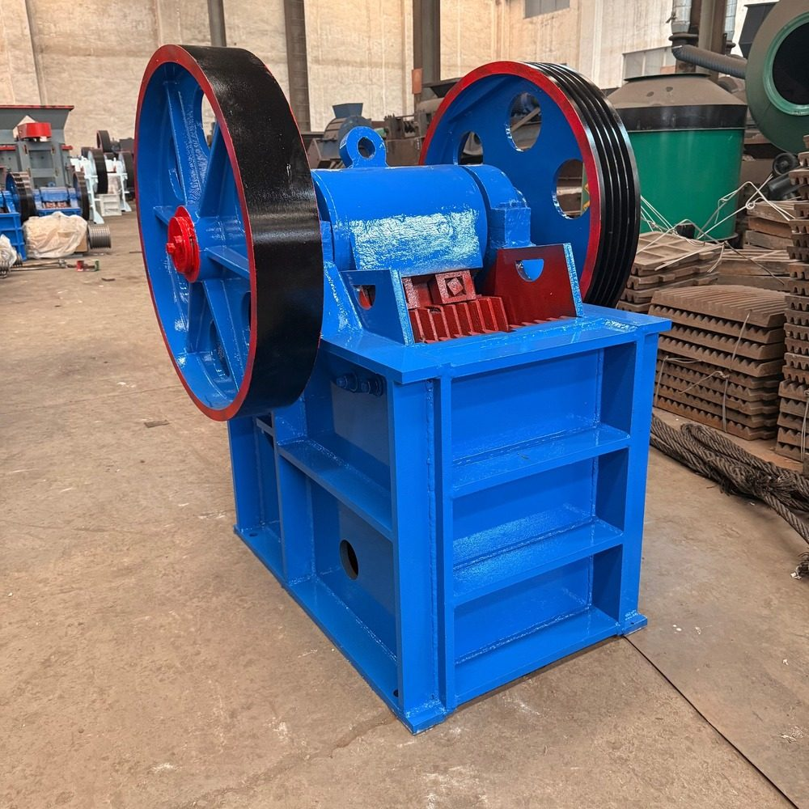
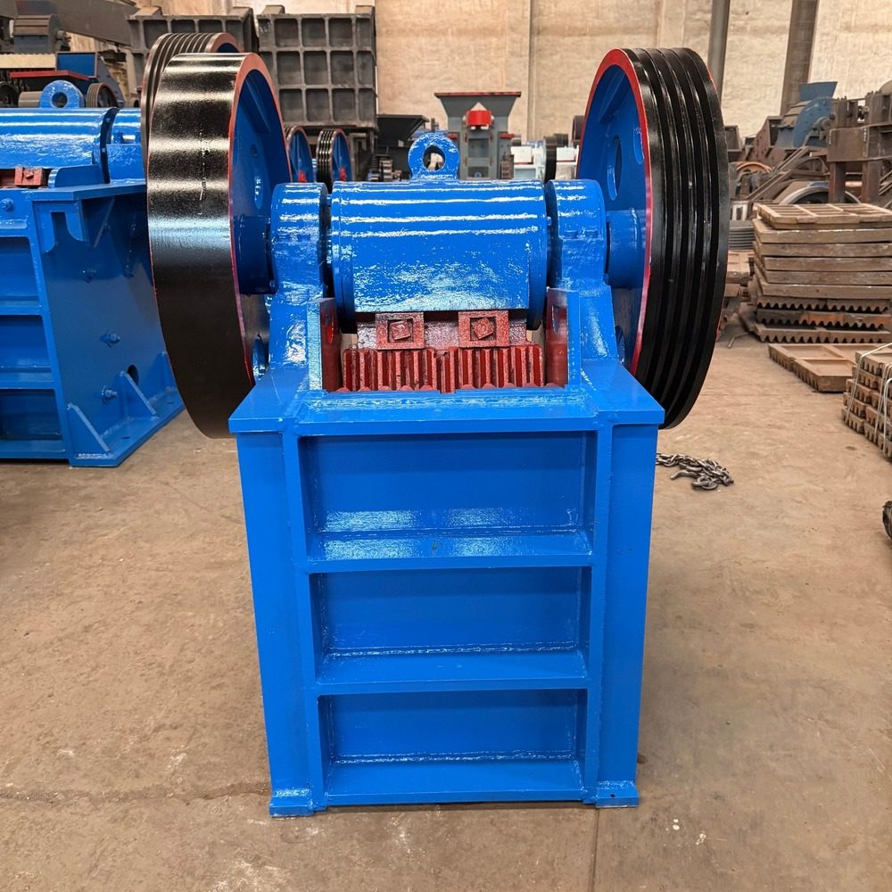
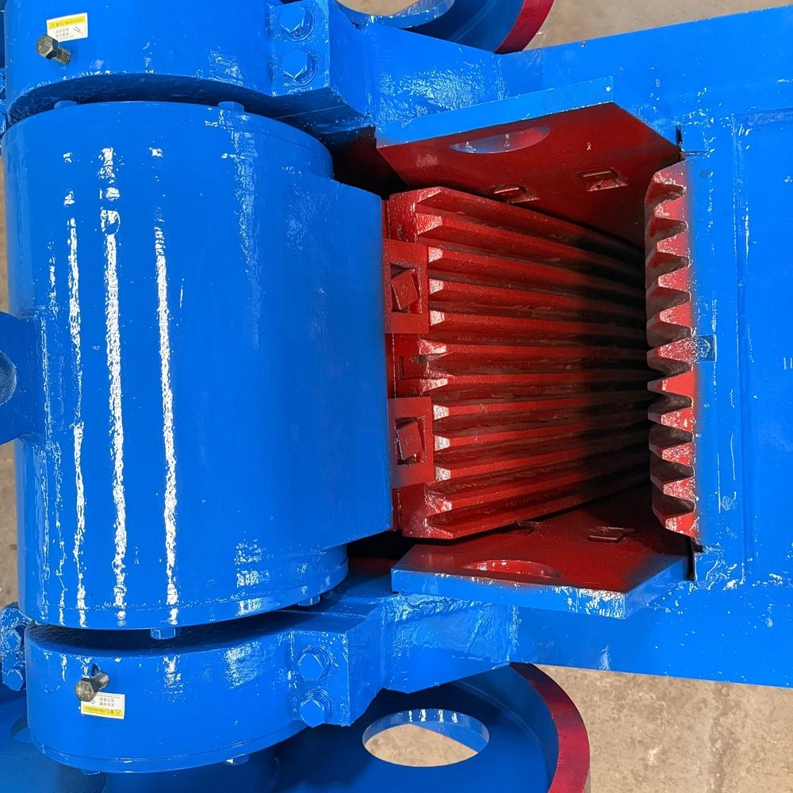

ZHENGZHOU BOORANT MECHANICAL EQUIPMENT CO., LTD.
Nous fabriquons des équipements de concassage et de broyage pour les carrières et les usines de traitement de l'or et des minéraux. Nous servons les importateurs, distributeurs et détaillants, avec l'Afrique comme marché principal.
Discuter sur WhatsApp Notre boutique Alibaba English versionSix familles principales. Indiquez-nous votre matériau, la taille d'alimentation et le débit souhaité : nous vous recommanderons un modèle et confirmerons ses caractéristiques réelles avant tout devis.
Concassage primaire pour la roche, la pierre de carrière et le minerai, du grand modèle pour lignes complètes aux unités compactes. Modèle demandé : PE200×300 — débit 3 à 10 t/h, moteur électrique ou diesel.
Concassage secondaire et fin pour roches dures et lignes de traitement, y compris la préparation d'alimentation des usines CIP/CIL.
Concassage en une étape pour les matériaux de dureté moyenne, en carrière et en mine.
Produit de forme cubique pour les granulats et le traitement des minéraux, lorsque la forme du produit compte.
Broyage du minerai d'or et traitement des minéraux, en plusieurs tailles. Modèle demandé : 600×1200 — débit 0,5 à 1,2 t/h, broyage à sec ou humide.
Déplacez la ligne de concassage jusqu'au matériau, pour les carrières et les sites miniers qui se déplacent ou exigent une installation rapide.
Séparation et classement pour compléter une ligne de concassage et de criblage.
Vous ne savez pas quelle machine choisir ? Envoyez-nous votre matériau et le débit visé : nous vous proposerons une configuration (concasseur + crible + broyeur) avant tout engagement.



Notre modèle intermédiaire le plus demandé pour l'or et les carrières, photographié tel quel — pas d'image d'illustration.
Daniel Wei
Zhengzhou Boorant Mechanical Equipment Co., Ltd., Zhengzhou, Chine
WhatsApp : +86 188 3803 3361
Alibaba : boorant.en.alibaba.com